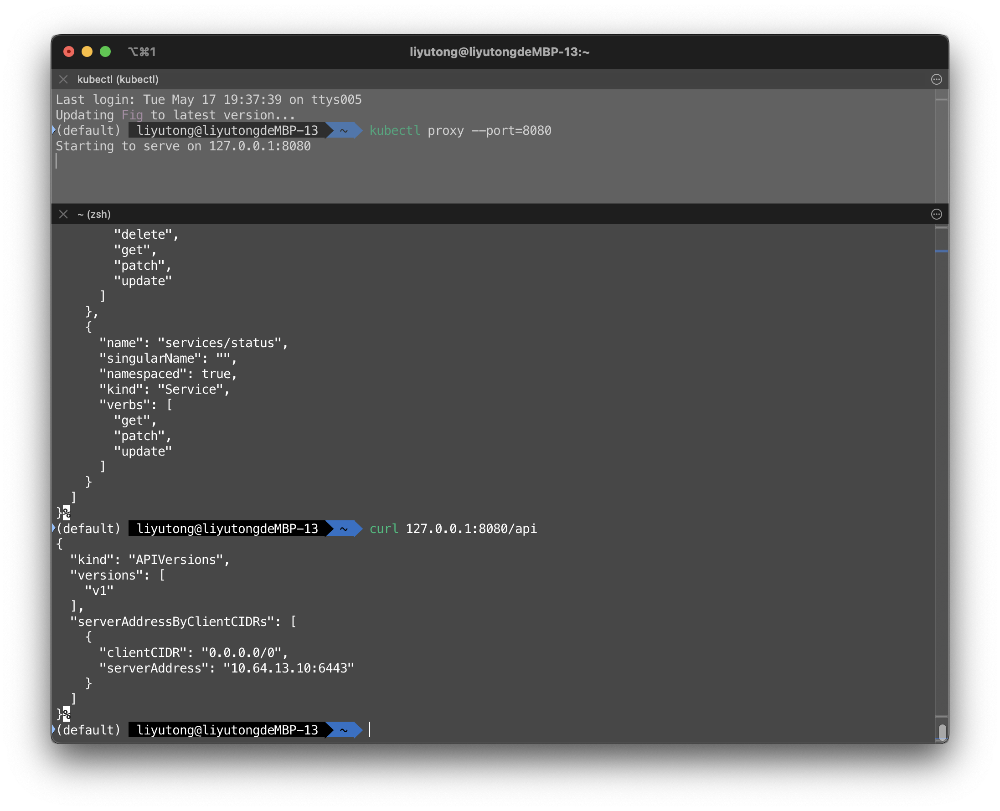
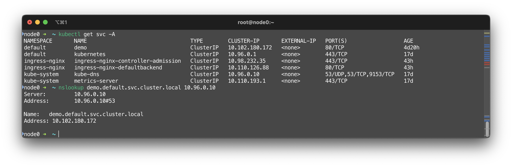
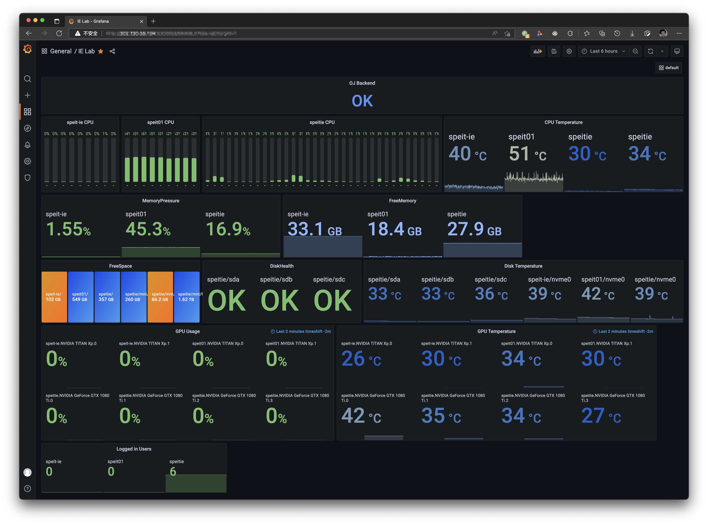
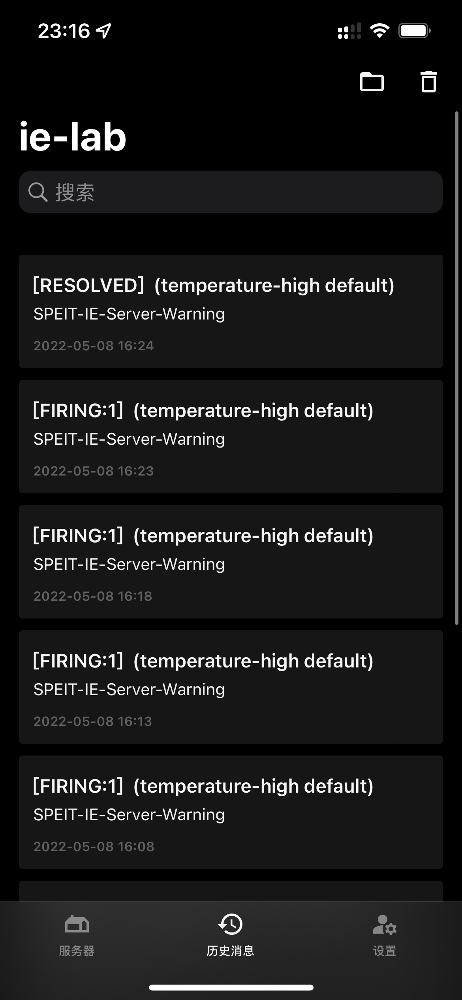

Components
kube-apiserver
使用curl调试K8SAPI是复杂的，因为这需要附加集群的认证信息。
在正确配置kubectl的context情况下。可以通过kubectl在本地创建一个远程API的代理。需要使用K8SAPI的本地应用就可以通过该代理免验证调用K8SAPI
该命令将在本地的8080端口创建一个K8SAPI代理，并持续运行。关闭运行该命令的终端窗口或打断命令将关闭代理
Note
--port参数指定了一个端口号

kube-dns
K8S种每一个Service都可以一个DNS名称。一般是<SVC>.<NS>.svc.cluster.local，其中SVC是Service名称，NS是Service所在的Namespace名称
可以看到，demo的解析名是demo.default.svc.cluster.local，该记录存在于10.96.0.10，即kube-dns中

可以对kube-dns进行配置
apiVersion: v1
kind: ConfigMap
metadata:
name: kube-dns
namespace: kube-system
data:
stubDomains:
aaa.bbb: ["1.2.3.4"] # aaa.bbb结尾的域名将交由DNS服务器1.2.3.4处理
upstreamNameservers:
- "114.114.114.114" # 指定上游DNS
stubDomains指定了怎样的domain应该由怎样的DNS处理upstreamNameservers指定了上游DNS
kubelet
目前，K8S正在向containerd转型，并将最终完全抛弃Docker。这是通过kubelet的CRI实现的。
Metrics-server
总的来说，metrics-server 的正常运行依赖于：
- Master节点和Metrics Server Pod能够互相联通（kubeadm默认满足）
- APIServer 启用聚合支持（kubeadm默认启用）
- 证书通过CA认证（开启serverTLSBootstrap）
wget https://github.com/kubernetes-sigs/metrics-server/releases/latest/download/components.yaml
kubectl apply -f components.yaml
Tip
详见Metrics-Server，在此不做赘述。可能需要替换镜像为bitnami/metrics-server；可能需要增加--kubelet-insecure-tls参数。

Promethus
Promethus 工作原理
flowchart TB
S0[Node Exporter]
S1["/"metrics API]
S2[Kubernetes API]
P[Promethus]
P-- pull --> S0
P-- pull --> S1
P-- pull --> S2
P -- push --> DB[(Influx DB)]
GR[Grafana] -- query --> DB可以在K8S集群上部署node-exporter导出数据，然后存进InfluxDB等数据库里。Grafana等面板/可视化软件可以利用这个数据库进行分析/告警
下图是IE Lab的服务器监控面板。该面板监控了三台位于IE Lab的服务器。方案是InfluxDB + Grafana。

该面板配置了报警系统: 当服务器的温度超过设定值一段时间后，就会向一个推送API告警。在一个案例中，该推送API被设置为由Finb/Bark的推送API，因此告警信息将经由Bark转发给Apple推送服务器并最终在设备上以推送通知的形式出现
